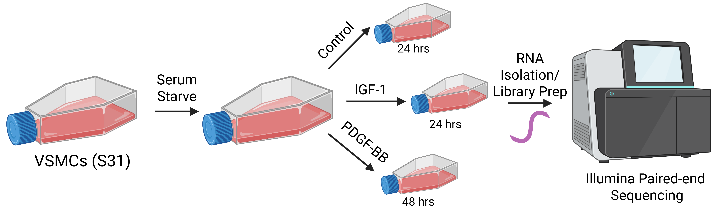

Code
#load packages needed for pipeline
library(tidyverse)
library(cowplot)
library(DESeq2)
library(ggrepel)
library(rtracklayer)Intro to R Final Project
The Conley Lab has previously published a paper that investigated the differential roles of platelet-derived growth factor BB (PDGF-BB) and insulin-like growth factor 1 (IGF-1) in induction of phenotypic switch in vascular smooth muscle cells (VSMCs).1 Phenotypic switch is a process in which VSMCs transition from their differentiated, contractile state to a more synthetic phenotype. From this state, they can adopt the phenotype many other cell types becoming more macrophage-like, osteochondrogenic-like, adipocyte-like, fibroblast-like, etc.2 The goal of this paper was to characterize the types of microvascular VSMC phenotypic switch induced by PDGF-BB and IGF-1.
As a part of this project, primary rat vascular smooth muscle cells (S31) were treated with either PDGF-BB (and collected after 48 hours for RNA isolation) or IGF-1 (and collected after 24 hours for RNA isolation) following serum starvation. Control cells were also serum starved and treated with vehicle then collected 24 hours later for RNA isolation. Libraries were prepped and sequenced using Illumina paired-end sequencing (Fig. 1).

Figure 1: VSMC treatment, RNA isolation, and sequencing workflow. Created with BioRender.com.
Originally, all downstream analysis of the bulk RNA sequencing data was performed by a bioinformatician. Since publication, I have developed a pipeline to analyze this data in R. The quality of sequencing data was checked using FastQC (v0.12.1). Fastq files were loaded into R and aligned to the rat reference genome (mRatBN7.2) using the Rsubread package (v2.18.0) resulting in BAM files. Aligned BAM files were annotated using an annotation .gtf file for rat (mRatBN7.2) through the Rsubread package (v2.18.0). Annotation resulted in the generation of an individual counts file for each sample. For this analysis project, I will load in individual count files for each sample (.csv). Once in R, I will add metadata, combine these files into a single counts dataframe, and tidy columns. I will then use the counts dataframe to make a counts matrix for DESeq. I will perform DESeq to get differentially expressed genes for each treatment group. I will then use various methods to view this differential expression data. My goal is to be able to visualize and better understand bulk RNA sequencing data using the code I generate.
Load all packages required for analysis.
#load packages needed for pipeline
library(tidyverse)
library(cowplot)
library(DESeq2)
library(ggrepel)
library(rtracklayer)Here, we will learn how to manipulate counts data in R to determine differentially expressed genes in treated groups.
This section covers how to merge individual .csv files with counts data into a data frame with count information for every sample mapped back to gene IDs.
I have previously generated individual .csv files for each sample that contain gene IDs and associated count data for that sample. As mentioned above, I have three groups with three replicates per group. Samples from the control group will be denoted as LH throughout analysis (as the serum starved media contains lactalbumin hydrolysate). Samples from the IGF-1 treated group will be labeled IGF and samples from the PDGF-BB treated group will be labeled PDGF. Samples will also have their replicate number (1-3) associated with them. Here, we will use a loop that loads in each individual .csv file after specifying paths. Once data is loaded in, I will visualize what one of the counts files looks like with glimpse().
#set paths
data_path <- "data"
csv_files <- list.files(path = data_path, pattern = "\\.csv$", full.names = TRUE)
#loop that loads in each count file and names it
for (file in csv_files) {
df_name <- tools::file_path_sans_ext(basename(file)) #strip .csv extension
assign(df_name, read.csv(file), envir = .GlobalEnv) #load into global environment
}
#view an example counts file
glimpse(LHNS1_counts)Rows: 30,562
Columns: 2
$ X <chr> "ENSRNOG00000066169", "ENSRNOG00000070168", "ENSRNOG…
$ LHNS1_aligned.bam <int> 1, 0, 813, 7, 0, 0, 107, 0, 0, 6, 0, 0, 0, 101, 52, …As you can see from the previous code, the gene IDs are housed in a column named “X”. In this code chunk, we will write a loop to rename the “X” column in each data frame and trim white space for each cell in this column. This is an important step to ensure proper merging of data frames later.
#get names of data.frames in global environment
df_names <- ls(envir = .GlobalEnv)[sapply(ls(envir = .GlobalEnv), function(x) is.data.frame(get(x)))]
#loop through each data frame and apply changes
for (df_name in df_names) {
df <-get(df_name)
if("X" %in% names(df)) {
df <- df |>
dplyr::rename(rat_gene_id = X) |> #renames X column in df
dplyr::mutate(rat_gene_id = str_trim(rat_gene_id)) #trims white space
}
assign(df_name, df, envir = .GlobalEnv)
}
#view an example counts file
glimpse(LHNS1_counts)Rows: 30,562
Columns: 2
$ rat_gene_id <chr> "ENSRNOG00000066169", "ENSRNOG00000070168", "ENSRNOG…
$ LHNS1_aligned.bam <int> 1, 0, 813, 7, 0, 0, 107, 0, 0, 6, 0, 0, 0, 101, 52, …The previous code renamed the column containing gene IDs; however, the column containing counts information still contains the full file name for the sample instead of just the sample name. Here, we will combine all individual counts files to make a merged counts data frame. In our data frame, we want a column for rat gene ids and a column that contains counts data for each individual sample. Once we have our merged counts data frame, we will rename the sample columns with proper sample names.
#get list of data.frames
dfs <- list(LHNS1_counts, LHNS2_counts, LHNS3_counts, IGFNS1_counts, IGFNS2_counts, IGFNS3_counts, PDGFNS1_counts, PDGFNS2_counts, PDGFNS3_counts)
#merge
rat_counts <- purrr::reduce(dfs, full_join, by = "rat_gene_id")
#rename columns
#specify old column names
old_column_names <- c("LHNS1_aligned.bam", "LHNS2_aligned.bam", "LHNS3_aligned.bam", "IGFNS1_aligned.bam", "IGFNS2_aligned.bam", "IGFNS3_aligned.bam", "PDGFNS1_aligned.bam", "PDGFNS2_aligned.bam", "PDGFNS3_aligned.bam")
#specify new column names
new_column_names <- c("LHNS1", "LHNS2", "LHNS3", "IGFNS1", "IGFNS2", "IGFNS3", "PDGFNS1", "PDGFNS2", "PDGFNS3")
#rename
names(rat_counts)[names(rat_counts) %in% old_column_names] <- new_column_names
#view merged counts df
glimpse(rat_counts)Rows: 30,562
Columns: 10
$ rat_gene_id <chr> "ENSRNOG00000066169", "ENSRNOG00000070168", "ENSRNOG000000…
$ LHNS1 <int> 1, 0, 813, 7, 0, 0, 107, 0, 0, 6, 0, 0, 0, 101, 52, 2032, …
$ LHNS2 <int> 0, 0, 431, 3, 0, 0, 95, 0, 0, 2, 0, 0, 0, 84, 45, 1187, 0,…
$ LHNS3 <int> 1, 0, 539, 0, 0, 0, 156, 0, 0, 0, 0, 0, 0, 85, 52, 1278, 0…
$ IGFNS1 <int> 0, 0, 1089, 5, 0, 0, 103, 0, 0, 4, 0, 0, 0, 161, 93, 2187,…
$ IGFNS2 <int> 0, 0, 537, 9, 0, 0, 46, 0, 0, 8, 0, 0, 0, 105, 64, 1138, 0…
$ IGFNS3 <int> 0, 0, 925, 8, 0, 0, 92, 0, 0, 6, 0, 0, 0, 130, 73, 2154, 0…
$ PDGFNS1 <int> 0, 0, 679, 4, 0, 0, 69, 0, 0, 6, 0, 0, 0, 110, 68, 1550, 0…
$ PDGFNS2 <int> 1, 0, 1207, 14, 0, 0, 177, 0, 0, 5, 0, 0, 0, 199, 105, 298…
$ PDGFNS3 <int> 1, 0, 966, 8, 0, 0, 140, 0, 0, 6, 0, 0, 0, 170, 83, 2346, …Gene symbols (i.e. Acta2) are much easier to digest than gene IDs (i.e. ENSRNOG00060028947). Here we will map gene symbols to our existing gene IDs in our data frame using a .gtf annotation file for Rattus norvegicus downloaded online from Ensembl (mRatBN7.2) that is now stored locally.
Here, we will load in our .gtf annotation file. Information from this annotation file will be filtered, converted to a data frame, and merged with our counts data frame. After some column manipulation, we will get a counts data frame that has a column for rat gene symbols, a column for rate gene IDs, and columns that contain count data for each sample.
#import annotation file saved locally (Rattus_norvegicus.mRatBN7.2.113.gtf.gz from Ensembl) using rtracklayer
annotation_file <- import("annotation_file/Rattus_norvegicus.mRatBN7.2.113.gtf.gz")
#filter for entries containing gene
gene_map <- annotation_file[annotation_file$type == "gene"]
#convert gene_map to df
gene_map_df <- as.data.frame(gene_map)
#pipe that takes gene_map df keeps all gene names that are not NA, selects gene_id and gene_name, checks for distinct rows, and renames gene_name to rat_gene_symbol
gene_map_df <- gene_map_df |>
dplyr::filter(!is.na(gene_map_df$gene_name)) |>
dplyr::select(gene_id, gene_name) |>
dplyr::distinct() |>
dplyr::rename(rat_gene_symbol = gene_name)
#join rat counts and gene map by gene ids
rat_counts <- left_join(rat_counts, gene_map_df, by = c("rat_gene_id" = "gene_id"))
#rearrange the newly added rat_gene_symbol column to be second in line
cols <- names(rat_counts)
rat_counts <- rat_counts[, c(cols[1], "rat_gene_symbol", setdiff(cols[-1], "rat_gene_symbol"))]
#view
glimpse(rat_counts)Rows: 30,562
Columns: 11
$ rat_gene_id <chr> "ENSRNOG00000066169", "ENSRNOG00000070168", "ENSRNOG00…
$ rat_gene_symbol <chr> NA, "Or51f23c", "Irgq", "Doc2g", "Ceacam16", "LOC12010…
$ LHNS1 <int> 1, 0, 813, 7, 0, 0, 107, 0, 0, 6, 0, 0, 0, 101, 52, 20…
$ LHNS2 <int> 0, 0, 431, 3, 0, 0, 95, 0, 0, 2, 0, 0, 0, 84, 45, 1187…
$ LHNS3 <int> 1, 0, 539, 0, 0, 0, 156, 0, 0, 0, 0, 0, 0, 85, 52, 127…
$ IGFNS1 <int> 0, 0, 1089, 5, 0, 0, 103, 0, 0, 4, 0, 0, 0, 161, 93, 2…
$ IGFNS2 <int> 0, 0, 537, 9, 0, 0, 46, 0, 0, 8, 0, 0, 0, 105, 64, 113…
$ IGFNS3 <int> 0, 0, 925, 8, 0, 0, 92, 0, 0, 6, 0, 0, 0, 130, 73, 215…
$ PDGFNS1 <int> 0, 0, 679, 4, 0, 0, 69, 0, 0, 6, 0, 0, 0, 110, 68, 155…
$ PDGFNS2 <int> 1, 0, 1207, 14, 0, 0, 177, 0, 0, 5, 0, 0, 0, 199, 105,…
$ PDGFNS3 <int> 1, 0, 966, 8, 0, 0, 140, 0, 0, 6, 0, 0, 0, 170, 83, 23…We now have mapped gene symbols to gene IDs, but how efficient was our mapping? Here we will visualize mapping efficiency with a pie chart.
#determine how many gene symbols mapped versus did not map
#analyze mapped v. not mapped
mapped_count <- sum(!is.na(rat_counts$rat_gene_symbol))
unmapped_count <- sum(is.na(rat_counts$rat_gene_symbol))
#make mapping summary
mapping_summary <- c("Mapped" = mapped_count, "Unmapped" = unmapped_count)
#make a data.frame
mapping_summary <- enframe(mapping_summary, name = "Status", value = "Count")
#add percentages
mapping_summary <- mapping_summary |>
mutate(Percent = round(Count / sum(Count) * 100, 1), Label = str_c(Percent, "%"))
#view df
head(mapping_summary)# A tibble: 2 × 4
Status Count Percent Label
<chr> <int> <dbl> <chr>
1 Mapped 26182 85.7 85.7%
2 Unmapped 4380 14.3 14.3%#visualize
ggplot(mapping_summary, aes(x = "", y = Count, fill = Status)) +
geom_bar(stat = "identity", width = 1) +
coord_polar("y") +
geom_text(aes(label = Label), position = position_stack(vjust = 0.45), color = "white", size = 5) +
theme_void() +
labs(title = "Mapping Summary") +
scale_fill_manual(values = c("Mapped" = "plum3", "Unmapped" = "gray65"))
Figure 2: Pie chart displaying the proportion of gene symbols that successfully mapped to gene IDs (purple) and gene symbols that did not map to gene IDs (grey).
Notice that our mapping was not 100% efficient. That’s okay, not every Ensembl ID has a gene symbol that maps to it! However, our percentage of mapped symbols was quite high, so we can move with analysis.
Here we will save out our counts file to an output_files folder.
#save
write.csv(rat_counts, file = "output_files/counts.csv")Currently, we only have a data frame with counts data. Counts data tells us the number of sequence reads that align to a particular gene for each sample. We do not know if our genes were differentially expressed across groups. DESeq2 is a package in R that is used to identify differentially expressed genes using our counts data.
Here, we will make a metadata data frame which is required for DESeq2. The metadata contains sample names in rows. It has one condition column and each cell contains the condition the sample maps to. For example, in my dataset I have nine samples with three conditions: LH, IGF, and PDGF. We will also define our reference level which is the baseline for comparison (LH).
#make a character vector of sample names
samples <- colnames(rat_counts[, -c(1, 2)])
#make a factor vector of conditions
conditions <- factor(c(rep("LH", 3), rep("IGF", 3), rep("PDGF", 3)), levels = c("LH", "IGF", "PDGF"))
#make metadata data.frame
metadata <- data.frame(condition = conditions, row.names = samples)
#define reference level (helps for comparisons like in DESeq)
metadata$condition <- relevel(metadata$condition, ref = "LH")
#view
head(metadata, 9) condition
LHNS1 LH
LHNS2 LH
LHNS3 LH
IGFNS1 IGF
IGFNS2 IGF
IGFNS3 IGF
PDGFNS1 PDGF
PDGFNS2 PDGF
PDGFNS3 PDGFWe have already generated a count matrix previously, but there are specific requirements for the count matrix needed to run DESeq2. we will generate a count matrix with gene IDs as row names and samples as column names. Each cell will contain the associated count data.
#get counts for each sample
countMat <- rat_counts[, -c(1, 2)]
#assign rat_gene_ids as row names
rownames(countMat) <- rat_counts$rat_gene_id
#convert to matrix
countMat <- as.matrix(countMat)
#view
head(countMat) LHNS1 LHNS2 LHNS3 IGFNS1 IGFNS2 IGFNS3 PDGFNS1 PDGFNS2
ENSRNOG00000066169 1 0 1 0 0 0 0 1
ENSRNOG00000070168 0 0 0 0 0 0 0 0
ENSRNOG00000070901 813 431 539 1089 537 925 679 1207
ENSRNOG00000018029 7 3 0 5 9 8 4 14
ENSRNOG00000031391 0 0 0 0 0 0 0 0
ENSRNOG00000055342 0 0 0 0 0 0 0 0
PDGFNS3
ENSRNOG00000066169 1
ENSRNOG00000070168 0
ENSRNOG00000070901 966
ENSRNOG00000018029 8
ENSRNOG00000031391 0
ENSRNOG00000055342 0Now that we have metadata and a count matrix, we will make a DESeq2 dataset that will store both of these items. We will also specify that we are looking at gene expression based on a “condition” factor (found in our metadata). After making the dataset, we will re-add in mapped gene symbols so that they stay associated with the DESeq2 dataset.
#make DESeq dataset
dds <- DESeqDataSetFromMatrix(countData = countMat, colData = metadata, design = ~ condition)
#re-add in gene symbols
gene_symbols <- rat_counts |>
dplyr::select(rat_gene_id, rat_gene_symbol) |>
as.data.frame()
rownames(gene_symbols) <- gene_symbols$rat_gene_id
gene_symbols <- gene_symbols[, "rat_gene_symbol", drop = FALSE]
mcols(dds)$rat_gene_symbol <- gene_symbols$rat_gene_symbol[match(rownames(dds), rownames(gene_symbols))]
#view
head(dds)class: DESeqDataSet
dim: 6 9
metadata(1): version
assays(1): counts
rownames(6): ENSRNOG00000066169 ENSRNOG00000070168 ...
ENSRNOG00000031391 ENSRNOG00000055342
rowData names(1): rat_gene_symbol
colnames(9): LHNS1 LHNS2 ... PDGFNS2 PDGFNS3
colData names(1): conditionFinally, we will run DESeq on our DESeq2 dataset. We will then view the results.
dds <- DESeq(dds)
resultsNames(dds)[1] "Intercept" "condition_IGF_vs_LH" "condition_PDGF_vs_LH"We can see that IGF v. LH were compared, but now we need to extract the differential expression data into a dataframe for this comparison. After some manipulation, we will have a data frame containing columns like rat gene name and gene symbol and columns with different metrics of differential expression data (i.e. log2FoldChange, adjusted p-value, etc.). This will be used in our volcano plot analysis later on.
#summary of DEGs
summary(results(dds, contrast=c("condition","IGF","LH"), alpha=0.05))
out of 21216 with nonzero total read count
adjusted p-value < 0.05
LFC > 0 (up) : 1794, 8.5%
LFC < 0 (down) : 1988, 9.4%
outliers [1] : 0, 0%
low counts [2] : 5625, 27%
(mean count < 3)
[1] see 'cooksCutoff' argument of ?results
[2] see 'independentFiltering' argument of ?results#save DEGs
#extract results for IGF vs LH as a regular data.frame
resIGF <- results(dds, contrast = c("condition","IGF","LH"))
resIGFDF <- as.data.frame(resIGF)
#add gene_id from the row names
resIGFDF$rat_gene_id <- rownames(resIGFDF)
#add the symbol column from rowData(dds)
resIGFDF$rat_gene_symbol <- mcols(dds)$rat_gene_symbol
#reorder to: symbol, gene_id, baseMean, log2FC, lfcSE, stat, pvalue, padj
resIGFDF <- resIGFDF[, c("rat_gene_id","rat_gene_symbol","baseMean","log2FoldChange","lfcSE","stat","pvalue","padj")]
#clear rownames
rownames(resIGFDF) <- NULL
#view
glimpse(resIGFDF)Rows: 30,562
Columns: 8
$ rat_gene_id <chr> "ENSRNOG00000066169", "ENSRNOG00000070168", "ENSRNOG00…
$ rat_gene_symbol <chr> NA, "Or51f23c", "Irgq", "Doc2g", "Ceacam16", "LOC12010…
$ baseMean <dbl> 0.4219285, 0.0000000, 754.6358198, 5.9886733, 0.000000…
$ log2FoldChange <dbl> -2.22523841, NA, 0.04658425, 0.82434700, NA, NA, -1.10…
$ lfcSE <dbl> 2.7411566, NA, 0.1367222, 0.8725030, NA, NA, 0.2827141…
$ stat <dbl> -0.8117881, NA, 0.3407220, 0.9448071, NA, NA, -3.90857…
$ pvalue <dbl> 4.169132e-01, NA, 7.333128e-01, 3.447574e-01, NA, NA, …
$ padj <dbl> NA, NA, 8.593717e-01, 5.553376e-01, NA, NA, 8.611040e-…Here, we will save our data frame containing DESeq2 results for the IGF v. LH comparison.
#write out to a CSV
write.csv(resIGFDF, file = "output_files/DEGs_IGF_vs_LH_AllGenes.csv", row.names = FALSE, quote = FALSE)We can also see that PDGF v. LH were compared, but we also need to extract the differential expression data into a dataframe for this comparison. After some manipulation, we will have a data frame containing columns like rat gene name and gene symbol and columns with different metrics of differential expression data (i.e. log2FoldChange, adjusted p-value, etc.). This will be used in our volcano plot analysis later on.
#summary of DEGs
summary(results(dds, contrast=c("condition","PDGF","LH"), alpha=0.05))
out of 21216 with nonzero total read count
adjusted p-value < 0.05
LFC > 0 (up) : 2566, 12%
LFC < 0 (down) : 2614, 12%
outliers [1] : 0, 0%
low counts [2] : 5223, 25%
(mean count < 2)
[1] see 'cooksCutoff' argument of ?results
[2] see 'independentFiltering' argument of ?results#save DEGs
#extract results for IGF vs LH as a regular data.frame
resPDGF <- results(dds, contrast = c("condition","PDGF","LH"))
resPDGFDF <- as.data.frame(resPDGF)
#add gene_id from the row names
resPDGFDF$rat_gene_id <- rownames(resPDGFDF)
#add the symbol column from rowData(dds)
resPDGFDF$rat_gene_symbol <- mcols(dds)$rat_gene_symbol
#reorder to: symbol, gene_id, baseMean, log2FC, lfcSE, stat, pvalue, padj
resPDGFDF <- resPDGFDF[, c("rat_gene_id","rat_gene_symbol","baseMean","log2FoldChange","lfcSE","stat","pvalue","padj")]
#clear rownames
rownames(resPDGFDF) <- NULL
#view
glimpse(resPDGFDF)Rows: 30,562
Columns: 8
$ rat_gene_id <chr> "ENSRNOG00000066169", "ENSRNOG00000070168", "ENSRNOG00…
$ rat_gene_symbol <chr> NA, "Or51f23c", "Irgq", "Doc2g", "Ceacam16", "LOC12010…
$ baseMean <dbl> 0.4219285, 0.0000000, 754.6358198, 5.9886733, 0.000000…
$ log2FoldChange <dbl> -0.712655529, NA, -0.002314038, 0.689019503, NA, NA, -…
$ lfcSE <dbl> 2.6903036, NA, 0.1363147, 0.8689066, NA, NA, 0.2764881…
$ stat <dbl> -0.26489781, NA, -0.01697571, 0.79297306, NA, NA, -2.3…
$ pvalue <dbl> 7.910882e-01, NA, 9.864560e-01, 4.277935e-01, NA, NA, …
$ padj <dbl> NA, NA, 9.925101e-01, 6.015807e-01, NA, NA, 5.435626e-…Here, we will save our data frame containing DESeq2 results for the PDGF v. LH comparison.
#write out to a CSV
write.csv(resPDGFDF, file = "output_files/DEGs_PDGF_vs_LH_AllGenes.csv", row.names = FALSE, quote = FALSE)Finally, we will want to make a merged data frame that contains a column for gene IDs, a column for gene_symbols, and all associated differential expression data for both comparisons (IGF v. LH and PDGF v. LH). We will use this later on for linear regression analysis.
#i will use this for linear regression analysis later on
#make merged data frame that only keeps gene ids and symbols from one results file and keeps all results columns from both columns
res_deseq_df <- merge(as.data.frame(resPDGFDF[,c(1, 2, 3, 4, 5, 6, 7, 8)]),as.data.frame(resIGFDF[,c(4, 5, 6, 7, 8)]), by="row.names", all.x = TRUE)
#rename columns
colnames(res_deseq_df) <- c("row_names", "rat_gene_id", "rat_gene_symbol", "baseMean", "log2FC_PDGF", "lfcSE_PDGF", "stat_PDGF", "pval_PDGF", "padj_PDGF", "log2FC_IGF", "lfcSE_IGF", "stat_IGF", "pval_IGF", "padj_IGF")
#drop rownames column
res_deseq_df <- res_deseq_df |>
dplyr::select(-row_names)
#view
glimpse(res_deseq_df)Rows: 30,562
Columns: 13
$ rat_gene_id <chr> "ENSRNOG00000066169", "ENSRNOG00000064851", "ENSRNOG00…
$ rat_gene_symbol <chr> NA, NA, "Mir99b", "Nox4", "LOC120102101", "Rnu1-136", …
$ baseMean <dbl> 0.42192848, 4.68612792, 0.00000000, 513.41211029, 0.98…
$ log2FC_PDGF <dbl> -0.7126555, 0.5118449, NA, -0.8148795, 0.9894075, NA, …
$ lfcSE_PDGF <dbl> 2.6903036, 0.9568976, NA, 0.2601420, 2.1482753, NA, 4.…
$ stat_PDGF <dbl> -0.26489781, 0.53490043, NA, -3.13244177, 0.46055897, …
$ pval_PDGF <dbl> 0.791088185, 0.592718712, NA, 0.001733588, 0.645115057…
$ padj_PDGF <dbl> NA, 0.738740077, NA, 0.007840122, NA, NA, NA, NA, NA, …
$ log2FC_IGF <dbl> -2.2252384, 0.8856692, NA, -0.5320750, -1.3897219, NA,…
$ lfcSE_IGF <dbl> 2.7411566, 0.9512155, NA, 0.2600764, 2.3835670, NA, 4.…
$ stat_IGF <dbl> -0.8117881, 0.9310920, NA, -2.0458408, -0.5830429, NA,…
$ pval_IGF <dbl> 0.41691320, 0.35180597, NA, 0.04077203, 0.55986439, NA…
$ padj_IGF <dbl> NA, 0.5621612, NA, 0.1273136, NA, NA, NA, NA, NA, NA, …Now we will save our merged data frame containing DESeq2 results for both comparisons.
#write out to a CSV
write.csv(res_deseq_df, file = "output_files/DEGs_PDGF_vs_LH_IGF_vs_LH_AllGenes.csv", row.names = FALSE, quote = FALSE)Now for the fun part, getting to see the changes in our data! This section will go over a few methods that can be used to visualize gene expression data.
Principal components analysis is a way to capture the variation in our gene expression data, allowing us to compare gene expression profiles across samples from our groups. This section will go over how to perform PCA analysis and plot principal components.
In class, we learned to perform PCA with tidymodels, but DESeq2 has a built-in method for principal components analysis that will be used here. We will perform variance-stabilizing transformation on our dataset. Then, we will perform PCA and pull out a few factors into new objects that will be helpful for plotting. Finally, we will use ggplot2 to plot our first two principal components allowing us to analyze changes in gene expression profiles across samples.
#perform PCA
#variance-stabilizing transformation
vsd <- vst(dds, blind = FALSE)
#pull out grouping factor (condition)
groupingfactor <- "condition"
#PCA data, % var
pcaDat <- plotPCA(vsd, intgroup = groupingfactor, returnData = TRUE)
percentVar <- round(100 * attr(pcaDat, "percentVar"))
#make PCA plot
#plot
ggplot(pcaDat, aes(x = .data[["PC1"]], y = .data[["PC2"]], color = .data[[groupingfactor]], shape = .data[[groupingfactor]])) +
geom_point(size = 4) +
geom_hline(yintercept = 0, linetype = "dashed") +
geom_vline(xintercept = 0, linetype = "dashed") +
scale_x_continuous(limits = c(-30, 30), expand = c(0, 0)) +
scale_y_continuous(limits = c(-30, 30), expand = c(0, 0)) +
coord_fixed() +
scale_shape_manual(values = c(16, 17, 15)) +
theme_cowplot() +
theme(panel.border = element_rect(color = "black", fill = NA, linewidth = 1), axis.line = element_blank()) +
scale_color_manual(values = c("black", "green", "blue")) +
labs(title = "Principal Component Analysis",
x = paste0("PC1: ", percentVar[1], "% Variance"),
y = paste0("PC2: ", percentVar[2], "% Variance"),
color = "Condition", shape = "Condition")-1.png)
Figure 3: Principal component analysis was performed to compare gene expression profiles from samples across three groups (LH (control, black circles), IGF (green triangles), and PDGF (blue squares)). PC1 represents Principal Component 1 which explains 61% of variance. PC2 represents Principal Component 1 which explains 33% of variance.
Here, we will save a .png of our PCA plot.
#save
ggsave("plots/pcaplot.png")Another way to visualize differential expression data is through volcano plots. A volcano plot is a type of scatter plot that plots fold change on the x-axis and statistical significance on the y-axis. These are both metrics that we obtain from DESeq2 comparisons. We will plot both comparisons we made separately to determine genes that were significantly differentially expressed in IGF v. Control samples or PDGF v. Control Samples. Let’s explore the IGF v. Control comparison here.
Here, we will use ggplot2 to plot a basic volcano plot. We will use some sorting to differentially color significantly downregulated genes, significantly upregulated genes, and nonsignificantly differentially regulated genes. Significance cutoffs will be indicated by dashed lines.
#IGF v. LH
#set sig cutoffs
resIGFDF$diffexpressed <- "NO"
resIGFDF$diffexpressed[resIGFDF$log2FoldChange > 0.585 & resIGFDF$padj < 0.05] <- "Upregulated"
resIGFDF$diffexpressed[resIGFDF$log2FoldChange < -0.585 & resIGFDF$padj < 0.05] <- "Downregulated"
#make volcano plot
vp1 <- ggplot(data = resIGFDF, aes(x = log2FoldChange, y = -log10(padj), col = diffexpressed)) +
geom_vline(xintercept = c(-0.585, 0.585), col = "black", linetype = 'dashed') +
geom_hline(yintercept = -log10(0.05), col = "black", linetype = 'dashed') +
geom_point(size = 2) +
scale_color_manual(values = c("lightblue2","gray","lightcoral"),labels = c("Downregulated","Not Significant","Upregulated")) +
coord_cartesian(ylim = c(0, 150), xlim = c(-10, 10)) +
labs(title = "IGF vs Control", x = expression("Log"[2]*"FC"), y = expression("-log"[10]*"p-adj")) +
scale_x_continuous(breaks = seq(-10, 10, 2)) +
theme_classic() +
theme(legend.title = element_blank()) +
theme(plot.title.position = "panel", plot.title = element_text(face = "bold",hjust = 0.5), plot.margin = margin(5,5,5,5))
#view
vp1
Figure 4: Volcano plot with Log2FC on the x-axis and the -Log(p-adjusted) on the y-axis. Significantly upregulated genes in the IGF-treated group versus the control group are shown in red and significantly downregulated genes in the IGF-treated group versus the control group are shown in blue. Dashed lines depict cutoffs for significance.
Now, we will take the generated volcano plot and label a few genes of interest. For example, I have added some genes important in phenotypic switch.
#specify genes of interest
genes_to_label <- c("Mmp2", "Tagln", "Lgals3", "Cnn1", "Myocd", "Srf", "Mkl1")
label_df <- subset(resIGFDF, rat_gene_symbol %in% genes_to_label)
#label genes of interest
vp1_labeled <- vp1 +
geom_point(size = 2, alpha = 0.6) +
geom_point(data = label_df, aes(x = log2FoldChange, y = -log10(padj)), color = "black", size = 2) +
geom_text_repel(data = label_df, aes(label = rat_gene_symbol), color = "black", size = 2, box.padding = 0.2, point.padding = 0.1)
#view
vp1_labeled
Figure 5: Volcano plot with Log2FC on the x-axis and the -Log(p-adjusted) on the y-axis. Significantly upregulated genes in the IGF-treated group versus the control group are shown in red and significantly downregulated genes in the IGF-treated group versus the control group are shown in blue. Dashed lines depict cutoffs for significance. Genes of interest important for phenotypic switch are labeled in black on the volcano plot.
Finally, we will use some filtering to label our most significantly differentially regulated genes (top 10).
#filter top10 most significant genes
resIGFDF |>
rownames_to_column("gene") |>
dplyr::filter(padj < 0.05) |>
slice_min((order_by = padj), n = 10) -> top_genes_IGF
#label volcano plot
vp1_top10 <- vp1 +
geom_point(size = 2, alpha = 0.6) +
geom_point(data = top_genes_IGF, aes(x = log2FoldChange, y = -log10(padj)), color = "black", size = 2) +
geom_text_repel(data = top_genes_IGF, aes(label = rat_gene_symbol), color = "black", size = 2, box.padding = 0.2, point.padding = 0.1)
#view
vp1_top10
Figure 6: Volcano plot with Log2FC on the x-axis and the -Log(p-adjusted) on the y-axis. Significantly upregulated genes in the IGF-treated group versus the control group are shown in red and significantly downregulated genes in the IGF-treated group versus the control group are shown in blue. Dashed lines depict cutoffs for significance. The top 10 most significantly differentially regulated genes are labeled in black on the volcano plot.
Here, we will save volcano plots created for the IGF v. Control condition.
#save
ggsave("plots/volcanoplotIGF.png", vp1)
ggsave("plots/volcanoplotIGFphenoswitchgenes.png", vp1_labeled)
ggsave("plots/volcanoplotIGFtop10.png", vp1_top10)Now, we will shift our attention and explore the PDGF v. Control comparison with the same plots.
Here, we will use ggplot2 to plot a basic volcano plot. We will use some sorting to differentially color significantly downregulated genes, significantly upregulated genes, and nonsignificantly differentially regulated genes. Significance cutoffs will be indicated by dashed lines.
#PDGF v. LH
#set sig cutoffs
resPDGFDF$diffexpressed <- "NO"
resPDGFDF$diffexpressed[resPDGFDF$log2FoldChange > 0.585 & resPDGFDF$padj < 0.05] <- "Upregulated"
resPDGFDF$diffexpressed[resPDGFDF$log2FoldChange < -0.585 & resPDGFDF$padj < 0.05] <- "Downregulated"
#make volcano plot
vp2 <- ggplot(data = resPDGFDF, aes(x = log2FoldChange, y = -log10(padj), col = diffexpressed)) +
geom_vline(xintercept = c(-0.585, 0.585), col = "black", linetype = 'dashed') +
geom_hline(yintercept = -log10(0.05), col = "black", linetype = 'dashed') +
geom_point(size = 2) +
scale_color_manual(values = c("lightblue2","gray","lightcoral"),labels = c("Downregulated","Not Significant","Upregulated")) +
coord_cartesian(ylim = c(0, 150), xlim = c(-10, 10)) +
labs(title = "PDGF vs Control", x = expression("Log"[2]*"FC"), y = expression("-log"[10]*"p-adj")) +
scale_x_continuous(breaks = seq(-10, 10, 2)) +
theme_classic() +
theme(legend.title = element_blank()) +
theme(plot.title.position = "panel", plot.title = element_text(face = "bold",hjust = 0.5), plot.margin = margin(5,5,5,5))
#view
vp2
Figure 7: Volcano plot with Log2FC on the x-axis and the -Log(p-adjusted) on the y-axis. Significantly upregulated genes in the PDGF-treated group versus the control group are shown in red and significantly downregulated genes in the PDGF-treated group versus the control group are shown in blue. Dashed lines depict cutoffs for significance.
Now, we will take the generated volcano plot and label a few genes of interest. For example, I have added some genes important in phenotypic switch.
#specify genes of interest
genes_to_label <- c("Mmp2", "Tagln", "Lgals3", "Cnn1", "Myocd", "Srf", "Mkl1")
label_df <- subset(resPDGFDF, rat_gene_symbol %in% genes_to_label)
#label genes of interest
vp2_labeled <- vp2 +
geom_point(size = 2, alpha = 0.6) +
geom_point(data = label_df, aes(x = log2FoldChange, y = -log10(padj)), color = "black", size = 2) +
geom_text_repel(data = label_df, aes(label = rat_gene_symbol), color = "black", size = 2, box.padding = 0.2, point.padding = 0.1)
#view
vp2_labeled
Figure 8: Volcano plot with Log2FC on the x-axis and the -Log(p-adjusted) on the y-axis. Significantly upregulated genes in the PDGF-treated group versus the control group are shown in red and significantly downregulated genes in the PDGF-treated group versus the control group are shown in blue. Dashed lines depict cutoffs for significance. Genes of interest important for phenotypic switch are labeled in black on the volcano plot.
Finally, we will use some filtering to label our most significantly differentially regulated genes (top 10).
#filter top10 most significant genes
resPDGFDF |>
rownames_to_column("gene") |>
dplyr::filter(padj < 0.05) |>
slice_min((order_by = padj), n = 10) -> top_genes_PDGF
#label volcano plot
vp2_top10 <- vp2 +
geom_point(size = 2, alpha = 0.6) +
geom_point(data = top_genes_PDGF, aes(x = log2FoldChange, y = -log10(padj)), color = "black", size = 2) +
geom_text_repel(data = top_genes_PDGF, aes(label = rat_gene_symbol), color = "black", size = 2, box.padding = 0.2, point.padding = 0.1)
#view
vp2_top10
Figure 9: Volcano plot with Log2FC on the x-axis and the -Log(p-adjusted) on the y-axis. Significantly upregulated genes in the PDGF-treated group versus the control group are shown in red and significantly downregulated genes in the PDGF-treated group versus the control group are shown in blue. Dashed lines depict cutoffs for significance. The top 10 most significantly differentially regulated genes are labeled in black on the volcano plot.
Here, we will save volcano plots created for the PDGF v. Control condition.
#save
ggsave("plots/volcanoplotPDGF.png", vp2)
ggsave("plots/volcanoplotPDGFphenoswitchgenes.png", vp2_labeled)
ggsave("plots/volcanoplotPDGFtop10.png", vp2_top10)Linear regression analysis is a method that is used to analyze the relationship between two different variables. For my gene expression data, I would like to better understand if gene expression changes in VSMCs after IGF-1 treatment are correlated with gene expression changes in VSMCs after PDGF treatment.
Here, we will assign a “group” variable based off of significance status for coloring on our later generated linear regression plot. This code was adapted from Hayes et al. 2022.3
#makes PDGF Sig Column that states if each gene is significantly differentially regulated (YES) or not (NO) in the PDGF treated group
res_deseq_df <- res_deseq_df
for (i in c(1:nrow(res_deseq_df))){
if (res_deseq_df$padj_PDGF[i]<0.05 & (!is.na(res_deseq_df$padj_PDGF[i]))){
res_deseq_df$PDGFSig[i] = 'YES'
}
else {
res_deseq_df$PDGFSig[i] = 'NO'
}
}
#makes IGF Sig Column that states if each gene is significantly differentially regulated (YES) or not (NO) in the PDGF treated group
for (i in c(1:nrow(res_deseq_df))){
if (res_deseq_df$padj_IGF[i]<0.05 & (!is.na(res_deseq_df$padj_IGF[i]))){
res_deseq_df$IGFSig[i] = 'YES'
}
else {
res_deseq_df$IGFSig[i] = 'NO'
}
}
#assigns groups based on significance status
for (i in c(1:nrow(res_deseq_df))){
if (res_deseq_df$PDGFSig[i] == 'YES' & res_deseq_df$IGFSig[i] == 'NO'){
res_deseq_df$Group[i] = 1}
else if (res_deseq_df$PDGFSig[i] == 'NO' & res_deseq_df$IGFSig[i] == 'YES'){
res_deseq_df$Group[i] = 2}
else if (res_deseq_df$PDGFSig[i] == 'YES' & res_deseq_df$IGFSig[i] == 'YES'){
res_deseq_df$Group[i] = 3}
else {
res_deseq_df$Group[i] = 4}
}
#view results
table(res_deseq_df$Group)
1 2 3 4
2720 1332 2450 24060 #subsets all significant genes (IGF, PDGF, IGF & PDGF) into a new object while leaving out non significant genes
res_deseq_df_final <- subset(res_deseq_df, res_deseq_df$Group != 4)Here, we will fit a model for linear regression on our significantly differentially expressed genes that were subset in the previous step. We will be comparing the log2fold change of gene expression between IGF-1 treated VSMCs and PDGF-treated VSMCs. Next, we will use ggplot2 to build a scatter plot that contains data points that are differentially colored based on their “Group” variable (which denotes significance status, see above). Fold change for the two different comparisons will be plotted on the x and y axis. Metrics extracted from the linear regression analysis that evaluate the fit of the model are also included.
#fit model for linear regression
fit1 <- lm(log2FC_IGF ~ log2FC_PDGF, data = res_deseq_df_final)
# Build the plot directly from the full data frame
ggplot(res_deseq_df_final, aes(x = log2FC_PDGF, y = log2FC_IGF, color = factor(Group))) +
geom_abline(slope = 1) +
geom_point() +
stat_smooth(method = "lm", color = "gray69", size = 2, se = TRUE) +
labs(title = "Linear Regression, IGF v. PDGF, All Significant Genes",
x = "PDGF (Log2FC)",
y = "IGF (Log2FC)",
subtitle = paste(
"Slope =", signif(fit1$coef[[2]], 3),
"p =", signif(summary(fit1)$coef[2, 4], 3),
"Adj R² =", signif(summary(fit1)$adj.r.squared, 3),
"Intercept =", signif(fit1$coef[[1]], 3))) +
scale_color_manual( name = "Significant (padj < 0.05)", values = c("blue", "green", "black"), labels = c("PDGF only", "IGF only", "PDGF & IGF")) +
xlim(-10, 11) +
ylim(-10, 11) +
theme_cowplot()
Figure 10: Plotted is the relationship between changes in gene expression (Log2FC) in IGF-1 treated VSMCs and PDGF-treated VSMCs. Data points are colored based on their significance status: blue depicts genes that were only significantly differentially expressed after PDGF treatment, green depicts genes that were only significantly differentially expressed after PDGF treatment, and black depicts genes that were significantly differentially expressed after both IGF and PDGF treatment. The regression line is depicted in grey (y = 0.481x + -0.0789, R2 = 0.351). A solid black line (y = x) is plotted for reference.
Here, we will save an image of our scatterplot with linear regression data as a .png.
#save
ggsave("plots/linreg_igfpdgf_allsiggenes.png")Here, I have provided an example on how to visualize and better understand bulk RNA sequencing data using R.
Figure 11: Satisfied VSMC. Created with BioRender.com.
R version 4.4.1 (2024-06-14 ucrt)
Platform: x86_64-w64-mingw32/x64
Running under: Windows 10 x64 (build 19045)
Matrix products: default
locale:
[1] LC_COLLATE=English_United States.utf8
[2] LC_CTYPE=English_United States.utf8
[3] LC_MONETARY=English_United States.utf8
[4] LC_NUMERIC=C
[5] LC_TIME=English_United States.utf8
time zone: America/Chicago
tzcode source: internal
attached base packages:
[1] stats4 stats graphics grDevices utils datasets methods
[8] base
other attached packages:
[1] rtracklayer_1.64.0 ggrepel_0.9.6
[3] DESeq2_1.44.0 SummarizedExperiment_1.34.0
[5] Biobase_2.64.0 MatrixGenerics_1.16.0
[7] matrixStats_1.4.1 GenomicRanges_1.56.2
[9] GenomeInfoDb_1.40.1 IRanges_2.38.1
[11] S4Vectors_0.42.1 BiocGenerics_0.50.0
[13] cowplot_1.1.3 lubridate_1.9.4
[15] forcats_1.0.0 stringr_1.5.1
[17] dplyr_1.1.4 purrr_1.0.2
[19] readr_2.1.5 tidyr_1.3.1
[21] tibble_3.2.1 ggplot2_3.5.2
[23] tidyverse_2.0.0
loaded via a namespace (and not attached):
[1] tidyselect_1.2.1 farver_2.1.2 Biostrings_2.72.1
[4] bitops_1.0-9 fastmap_1.2.0 RCurl_1.98-1.16
[7] GenomicAlignments_1.40.0 XML_3.99-0.17 digest_0.6.37
[10] timechange_0.3.0 lifecycle_1.0.4 magrittr_2.0.3
[13] compiler_4.4.1 rlang_1.1.6 tools_4.4.1
[16] utf8_1.2.6 yaml_2.3.10 knitr_1.50
[19] S4Arrays_1.4.1 labeling_0.4.3 htmlwidgets_1.6.4
[22] curl_5.2.3 DelayedArray_0.30.1 RColorBrewer_1.1-3
[25] abind_1.4-8 BiocParallel_1.38.0 withr_3.0.2
[28] grid_4.4.1 colorspace_2.1-1 scales_1.4.0
[31] cli_3.6.5 rmarkdown_2.29 crayon_1.5.3
[34] ragg_1.4.0 generics_0.1.4 rstudioapi_0.17.1
[37] httr_1.4.7 tzdb_0.5.0 rjson_0.2.23
[40] splines_4.4.1 zlibbioc_1.50.0 parallel_4.4.1
[43] XVector_0.44.0 restfulr_0.0.15 vctrs_0.6.5
[46] Matrix_1.7-0 jsonlite_1.8.9 hms_1.1.3
[49] systemfonts_1.2.3 locfit_1.5-9.10 glue_1.8.0
[52] codetools_0.2-20 stringi_1.8.4 gtable_0.3.6
[55] BiocIO_1.14.0 UCSC.utils_1.0.0 pillar_1.11.0
[58] htmltools_0.5.8.1 GenomeInfoDbData_1.2.12 R6_2.6.1
[61] textshaping_1.0.1 evaluate_1.0.4 lattice_0.22-6
[64] Rsamtools_2.20.0 Rcpp_1.0.13 nlme_3.1-164
[67] SparseArray_1.4.8 mgcv_1.9-1 xfun_0.52
[70] pkgconfig_2.0.3